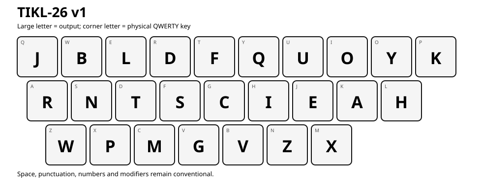

Open-source keyboard research
Tickle the keys
differently.
TIKL means Token-Informed Keyboard Layout: a project exploring whether language-model tokenisation, language statistics and human motor modelling can produce better keyboard mappings.
Primary research layout
TIKL-26 v1
Physical ANSI QWERTY positions produce the characters shown below. Space, punctuation, numbers and modifiers remain conventional.

The score is a computed model result, not a prediction of typing speed, injury reduction or medical benefit.
What makes it different
Tokens inform the path.
They do not become macros.
TIKL decodes tokenizer structure back into literal characters that humans type. It studies longer recurring paths, word boundaries, morphology, keyboard geometry and multiple typing styles while preserving direct access to every letter.
The first ablation found a scientifically modest result: token information added a small refinement beyond a strong character n-gram optimiser. TIKL publishes that result openly rather than exaggerating it.
Install and test
Use the keyboard you already own.
Ready-to-test mappings are available for Windows, macOS and Linux. Keep an emergency fallback during first installation.
Open project
Inspect it. Challenge it. Improve it.
TIKL is licensed under Apache 2.0. Contributions to motor modelling, corpus provenance, tokenizer analysis, mappings and empirical trials are welcome.
Contribute on GitHub